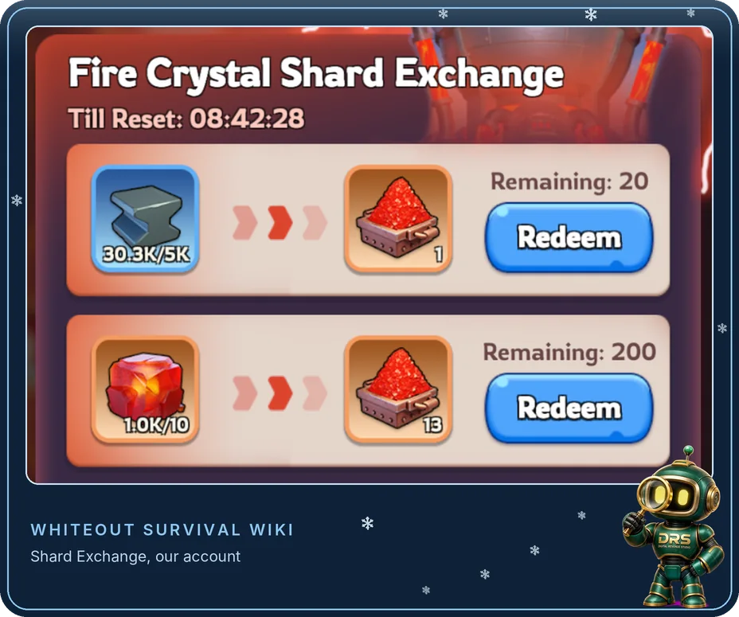

Rebuilt 29 October 2026. We rewrote this guide because the earlier version described the War Academy as the early-game route through ordinary troop tiers. It is a separate, later research system with its own costs, and this page now explains it that way.
What the War Academy Actually Is
The War Academy is a research building for the Fire Crystal era. Its research is split into Infantry, Lancer and Marksman branches. Along the way it gives capacity and stat improvements, and at the end of each branch it unlocks Helios troops, also called T11. It is not the building that unlocks the ordinary early troop tiers. Those come from your troop camps as your Furnace levels up, and our Troop Mastery guide covers them.
Two separate gates apply. Your state must have released the feature, which players and guides place at roughly seven to eight months into state progression, though the reported day varies. Your account must also meet the building requirement, which is documented as Furnace FC1 for the initial construction. Reaching FC1 does not skip the state release, so follow your state's live unlock notice rather than an estimated day.
Each research step depends on the War Academy's building level, the prerequisite research before it, Fire Crystal Shards, Steel and other ordinary resources, and research time. Check all of these before you decide on a branch.
The tree contains capacity and stat improvements before the final Helios unlock, so you can gain useful benefits without committing to a whole branch straight away. Whether a particular step is worth it depends on how often you use what it improves and what the next level costs.
The Helios unlock is a long, expensive chain rather than a single purchase. Plan it around the resources and timers you actually have, and expect to keep other upgrades running alongside it.
Four Progression Systems, Not One
It is easy to blend these together, so keep them apart when you plan.
A bonus from one system does not automatically carry over to another, so read the wording of each node and check whether it applies to a troop type in general or only to a particular tier. Do not assume a research bonus disappears when you promote your troops.
Fire Crystal Shards, Steel and the Exchange
Fire Crystals and Fire Crystal Shards are different resources. Shards are what War Academy research spends, and you can obtain them by exchanging Steel or Fire Crystals. The exchange panel on our own account lists two offers. Steel gives one shard per exchange, at 5,000 Steel, with “Remaining: 20” beside it, which works out at a maximum of 100,000 Steel spent daily. Fire Crystals give 13 shards for every 10 crystals, with “Remaining: 200” beside it. A “Till Reset” timer counts down on the panel. The number beside each offer looks like a count of exchanges, but we have not tested what the 200 counts, and published guides word it differently. Check the remaining allowance on your own exchange screen before you plan around a daily maximum.

Convert from a surplus, not because the exchange allows it. The final Helios Infantry research alone needs roughly a million Steel on top of its prerequisites, so a large pile of shards does not guarantee you can complete the next step. Track your Steel over a few weeks, and if it keeps falling while the next major research is still far away, reduce your conversion before the shortage blocks you.
The Helios Unlock Is a Chain
Being able to build the War Academy does not mean you can unlock Helios straight away. Construction needs Furnace FC1, but unlocking a Helios troop type needs a higher War Academy level and the completion of its prerequisite research. For Helios Infantry, the building must reach FC5, and the research Flame Tomahawk, Flame Protection and Flame Legion must be finished at their final levels. Those are the immediate prerequisites of the final research, not everything you must do earlier in the branch, and each troop branch has its own chain, so check the one you plan to follow on its own screen.
Quoting the final unlock as the cost of the whole project understates it. Your own timer will be shorter than the base figure once your research bonuses apply, so compare the timer on your screen rather than another player's.
What the Costs Look Like
The cost of a research step depends on which step it is, and the steps differ a lot. These are five steps we opened on our own account on 30 October 2026. Each row is the cost of one level, as listed on that step’s research screen, and M means million. The time is the timer on our screen after our research bonuses, with the base time underneath where the game showed one. We have not compared these figures with another account, so treat them as examples and read your own research screen before you plan.
| Research step | Shards | Steel | Meat and Wood (each) | Coal | Iron | Time on our screen |
|---|---|---|---|---|---|---|
| Flame Squad, level 0 to 1 | 16 | 5,000 | 300,000 | 60,000 | 15,000 | 4h 29mbase 8h |
| Flame Legion, level 0 to 1 | 83 | 23,000 | 1M | 210,000 | 54,000 | 16h 28mbase not shown |
| Helios Marksman First Aid, level 3 to 4 | 127 | 37,000 | 3.1M | 620,000 | 150,000 | 1d 11hbase 2d 14h 30m |
| Helios Marksman Training, level 4 to 5 | 341 | 100,000 | 8.3M | 1.6M | 410,000 | 3d 22hbase 6d 23h 30m |
| Helios Marksman Healing, level 5 to 6 | 459 | 130,000 | 11M | 2.2M | 560,000 | 5d 6hbase 9d 9h |
Two things stood out. The first level of Flame Legion cost about five times the shards of the first level of Flame Squad, and the three Helios Marksman steps asked for 127, 341 and 459 shards, with timers from about a day and a half to over five days. Flame Legion also listed Flame Strike level 6 and Flame Shield level 6 as requirements, each with a Go button that takes you to it. On every screen that showed a base time, our timer was about 56 percent of it, which points to a research speed bonus on our account. Yours will probably differ.
Deployment Capacity and Rally Capacity Are Different
The tree contains research that raises deployment capacity, which is how many troops your own march can carry, and separate research that raises rally capacity, which is the total number of troops a rally can hold. They are not the same thing and neither one is simply "march capacity".
- Rally joiners look at deployment capacity first, because it changes the size of your own march.
- Rally leaders also look at rally capacity, because it changes how many troops the whole rally can hold.
- Read the tooltip before you rely on a figure. Descriptions for capacity research can be worded inconsistently, so check what your own node says it increases.
Running Costs, a Second Branch and Later Troops
Follow-up research can reduce the resources needed to train or heal the Helios troop type you unlocked. Those are cost reductions, which is different from training or healing speed, so read what each node says it changes. Once you have unlocked a branch, the trade-off is between making the troops you already use cheaper to run and opening another troop type. A frequent fighter will feel running costs sooner, while a less combat-active player may value a second option more.
Flame Tech becomes available in the War Academy once your state reaches the required age and you have unlocked any Helios troop. It leads towards Exalted troops, also called T12. That does not mean one Helios unlock instantly gives you Exalted troops, and it is a further major commitment of Steel, Refined Fire Crystals, Fire Crystal Shards and ordinary resources. There is no need to rush it. Check the complete route on your own screens first.
Research Speed and Speedups
Research speed does not remove the same percentage of your remaining time with every increase. Each extra point saves a little less than the one before, so compare your displayed timer before and after an upgrade rather than assuming a simple percentage.
Speedups also only help if time is your bottleneck. If you run out of shards or Steel before you run out of time, finishing a short research quicker just brings forward a period when the War Academy sits idle. Use speedups when they unlock something meaningful, finish a worthwhile event objective or shorten a long timer whose materials you already hold.
Choosing a Route
There is no single best order, because the right choice depends on your Fire Crystal income, your Steel reserve, your state age and what you do in the game. These are suggested starting points, not rules.
Ask your alliance what troops it needs before you choose a first branch. A hero you like does not by itself prove that class is the best first research project, and our Hero Priority guide covers how to think about your heroes separately.
What Players Report
These are player experiences, not a guaranteed best route. Players disagree because their Fire Crystal income, Steel reserves, state ages and goals differ, so compare the reasoning with your own account.
- Steel conversion divides players. Some use regular Steel conversion as their main route to shards. Others ran short of Steel after converting too aggressively, and suggested reserve amounts vary widely.
- Fire Crystal conversion divides them more. Some players avoid it while important building upgrades are unfinished. Others allow a limited amount, or convert a surplus once they reach a chosen building milestone. Players who delayed the War Academy sometimes regret the lost research, and others regret slowing their buildings.
- Early deployment research is a popular start. Many players take useful deployment-capacity research before committing to a branch, and some add a few cheap stat improvements in another branch.
- The first branch usually follows a role. Reports commonly favour Infantry for frontline PvP, Marksmen for Bear Hunt, and whatever the alliance needs for garrison duties. Players also say to focus one branch before spreading out.
- The research-speed bonus is said to help the regular Academy too. Players report that upgrading the War Academy improves research speed in the regular research building as well. Compare your displayed stat before and after to see the real gain.
- Shards can come from more than exchanges. Players mention War Academy weekly rewards, event rewards, shops and packs. Some of these are reward tracks that your activities advance, not drops from the activity itself, so check what each one actually pays.
- Helios versus Fire Crystal levels. Some players ask whether to push their troop camps to higher Fire Crystal levels before taking on Helios, because Helios is a very large commitment. Compare the costs on your own screens before you choose.
- Events can reward War Academy activity. Some players report scoring from shard use, research speedups or technology power. Which of these counts depends on the current event stage, so read its scoring rules before you save resources for it.
What Most Players Get Wrong
Treating it as the early-game tier route. The ordinary troop tiers come from your troop camps. The War Academy is a later Fire Crystal era system.
Converting everything because the exchange allows it. Steel and Fire Crystals have other uses, and a stockpile of shards you cannot spend is not progress.
Counting only the final unlock. The building levels, prerequisite research, shards, Steel, time and running costs afterwards all belong in the plan.
Calling both capacity types "march capacity". Deployment capacity and rally capacity do different jobs, so know which one a node changes.
Spending speedups just to hit the next shortage sooner. Check whether time, shards or Steel is actually holding you back.
Copying a fixed Steel reserve from someone else. Base it on your own income and the research you plan to do next.
Check on your own screens. The unlock notice for your state, the remaining daily allowance on the Fire Crystal exchange, the full prerequisite chain for your chosen branch, the wording of each capacity node, and the timer with your research bonuses applied. Base costs and prerequisites can change with updates, while your actual timers and available bonuses depend on your account. That is why this guide gives approximate scales rather than fixed numbers.